11 call(s) · 3 sample(s) · 11 gene(s) · 2026-10-06
This page: summary.html
Download: the whole report (61.3 MB): every page, image and interactive view; unzip and open summary.html. It contains read data: keep it where the BAMs may be.
Interactive views (zoom, scroll, click reads): T0_tumor · T1_tumor · T2_tumor. Each page contains read data: keep it with the BAMs; do not email or upload it.
4 to look at first, 7 consistent so far out of 11 curated calls (sample x gene). Open each row's image before citing any of them.
| Sample | Gene | Curated call | What IGV shows | Start here | Evidence |
|---|---|---|---|---|---|
| T1_tumor | ATRX | point mutation (SNV) | Only a few reads carry the variant.detailsVerdict: differs Review: check first: the verdict differs from the curated call; few supporting reads; low allele fraction; weak read support Reason: curated SNV, but chrX:77,599,465 C>T: too few supporting reads; under 5% of reads IGV found: SNV weak | Look first | 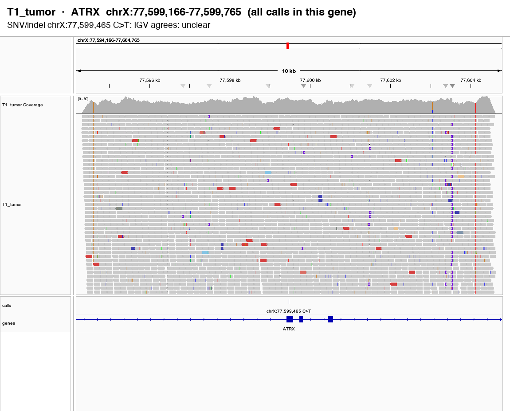 report · overview · interactive |
| T2_tumor | FGFR3 | point mutation (SNV) | 4 of 119 reads carry the deletion (3.4%), but under 5% of reads.detailsVerdict: differs Review: check first: the verdict differs from the curated call; low allele fraction Reason: curated SNV, but chr4:1,805,817 1 bp deletion: under 5% of reads IGV found: SNV not supported | Look first | 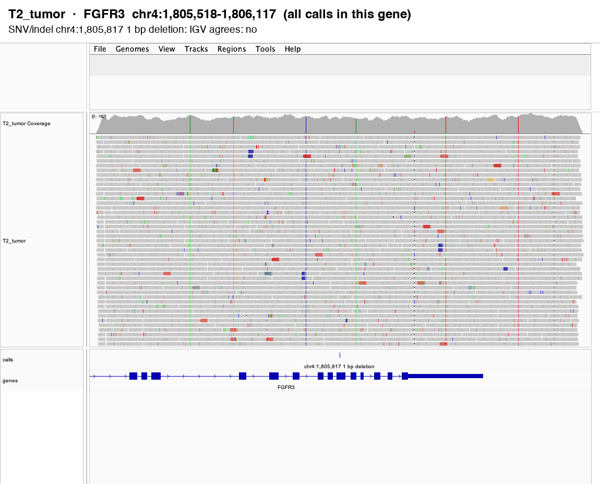 report · overview · interactive |
| T0_tumor | ODF1 | point mutation (SNV) | 5 of 52 reads carry T (9.6%), but all supporting reads on one strand (artifact pattern).detailsVerdict: differs Review: check first: the verdict differs from the curated call; all supporting reads on one strand Reason: curated SNV, but chr8:102,560,579 G>T: all supporting reads on one strand (artifact pattern) IGV found: SNV not supported | Look first | 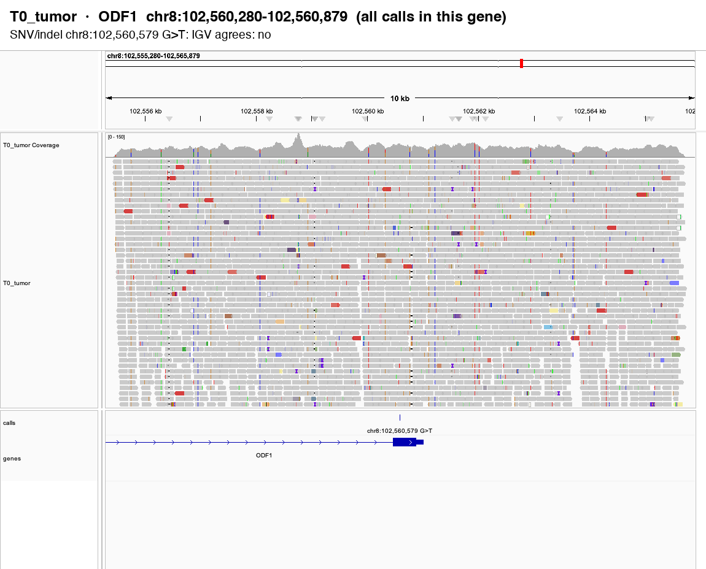 report · overview · interactive |
| T1_tumor | ROS1 | point mutation (SNV) | 6 of 94 reads carry T (6.4%), but the normal already carries another allele here.detailsVerdict: differs Review: check first: the verdict differs from the curated call Reason: curated SNV, but chr6:117,301,021 G>T: the normal already carries another allele here IGV found: SNV not supported | Look first | 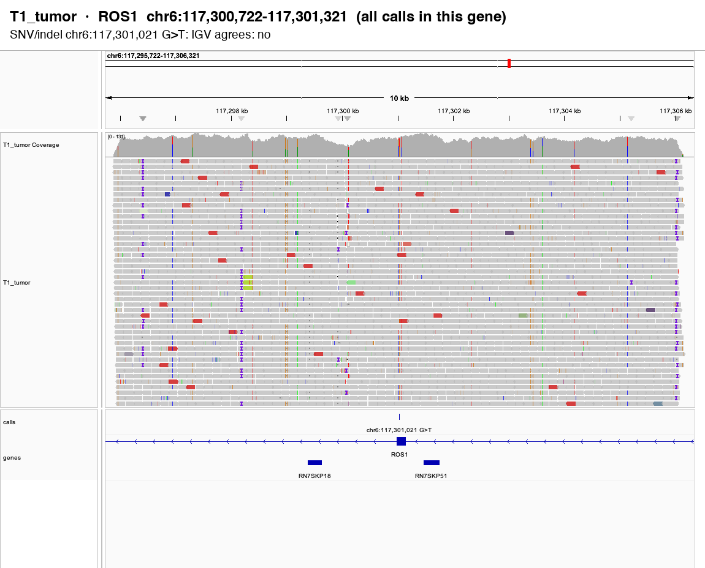 report · overview · interactive |
| T1_tumor | CDKN2B-PARD3B | rearrangement (SV) | Reads support the rearrangement (split and discordant reads at the breakpoint).detailsVerdict: matches Review: low priority Reason: IGV supports the SV IGV found: SV real | Consistent so far | 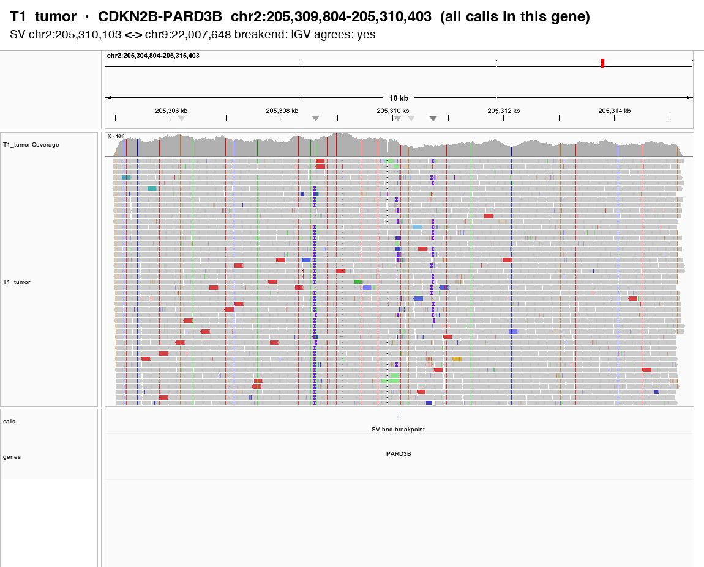 report · overview · interactive |
| T1_tumor | DOT1L | point mutation (SNV) | The variant is in the reads: 12 of 62 reads carry A (19.4%).detailsVerdict: matches Review: low priority Reason: IGV supports the SNV IGV found: SNV real | Consistent so far | 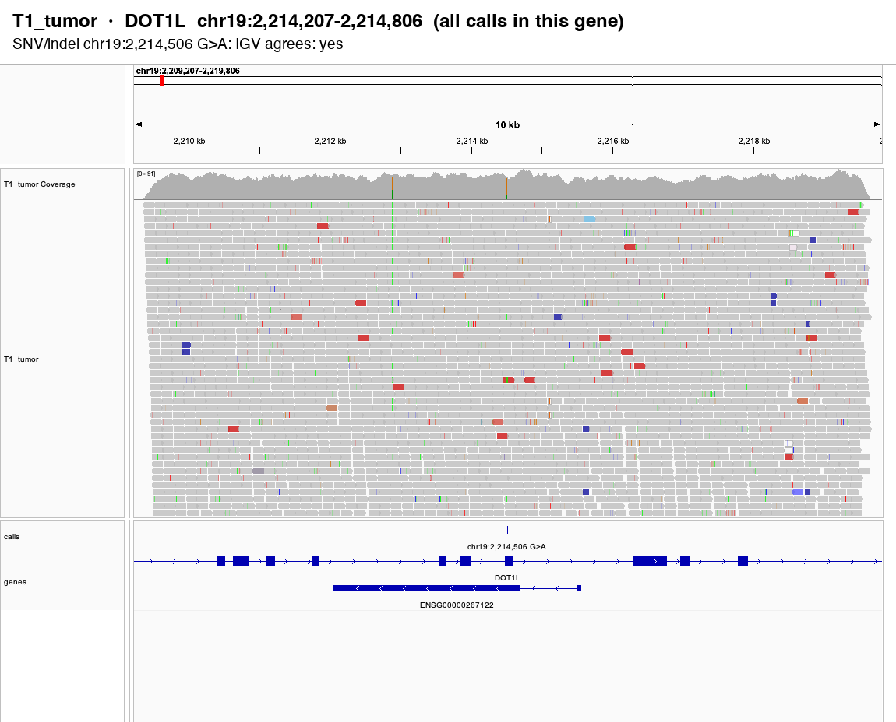 report · overview · interactive |
| T1_tumor | H1-2 | point mutation (SNV) | The variant is in the reads: 9 of 108 reads carry the deletion (8.3%).detailsVerdict: matches Review: low priority Reason: IGV supports the SNV IGV found: SNV real | Consistent so far | 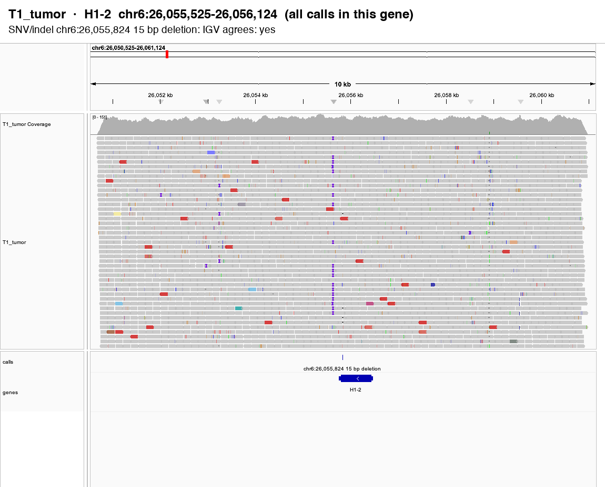 report · overview · interactive |
| T1_tumor | MAP2 | point mutation (SNV) | The variant is in the reads: 29 of 85 reads carry the deletion (34.1%).detailsVerdict: matches Review: low priority Reason: IGV supports the SNV IGV found: SNV real | Consistent so far | 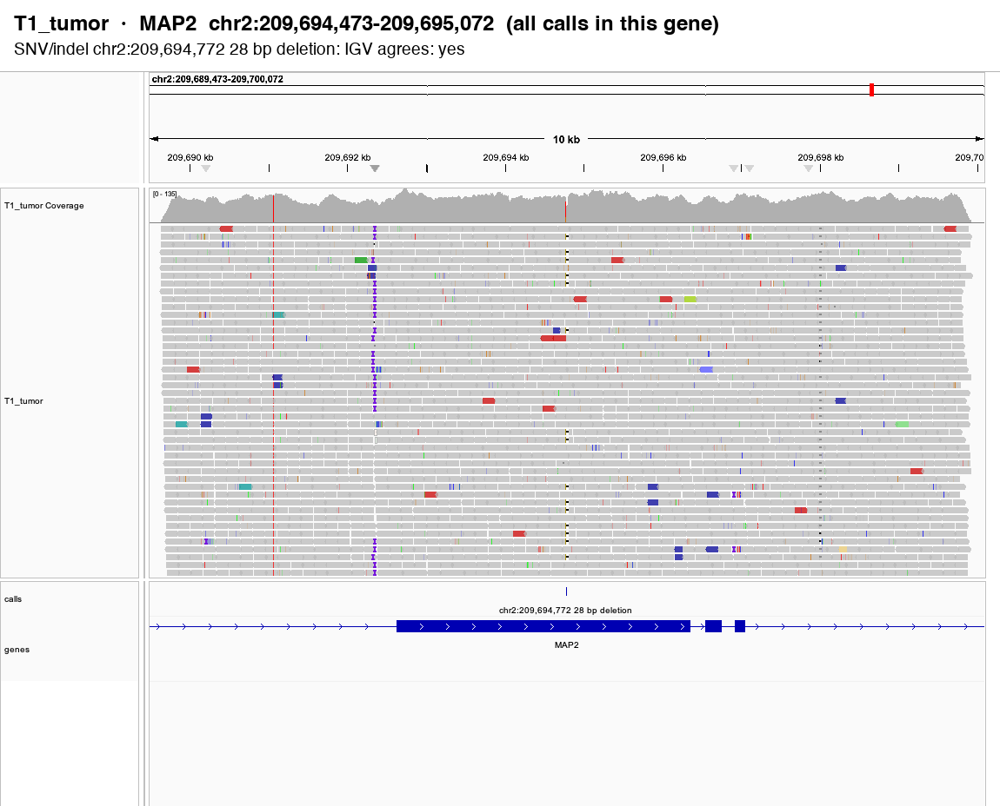 report · overview · interactive |
| T1_tumor | ROBO2 | point mutation (SNV) | The variant is in the reads: 13 of 124 reads carry A (10.5%).detailsVerdict: matches Review: low priority Reason: IGV supports the SNV IGV found: SNV real | Consistent so far | 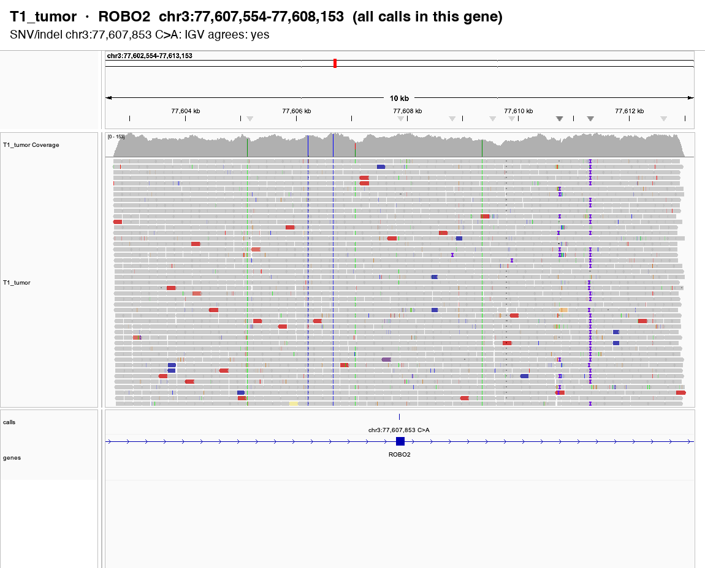 report · overview · interactive |
| T0_tumor | USH2A | point mutation (SNV) | The variant is in the reads: 15 of 40 reads carry A (37.5%).detailsVerdict: matches Review: low priority Reason: IGV supports the SNV IGV found: SNV real | Consistent so far | 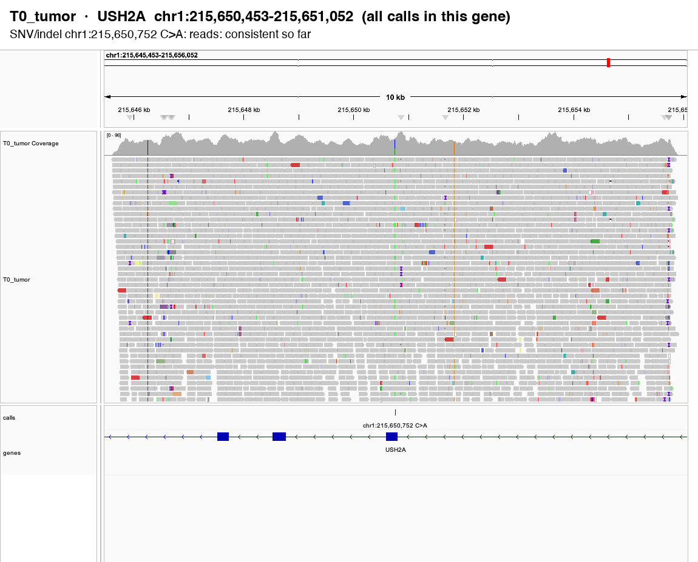 report · overview · interactive |
| T1_tumor | ZNRF3 | point mutation (SNV) | The variant is in the reads: 3 of 57 reads carry A (5.3%).detailsVerdict: matches Review: low priority Reason: IGV supports the SNV IGV found: SNV real | Consistent so far | 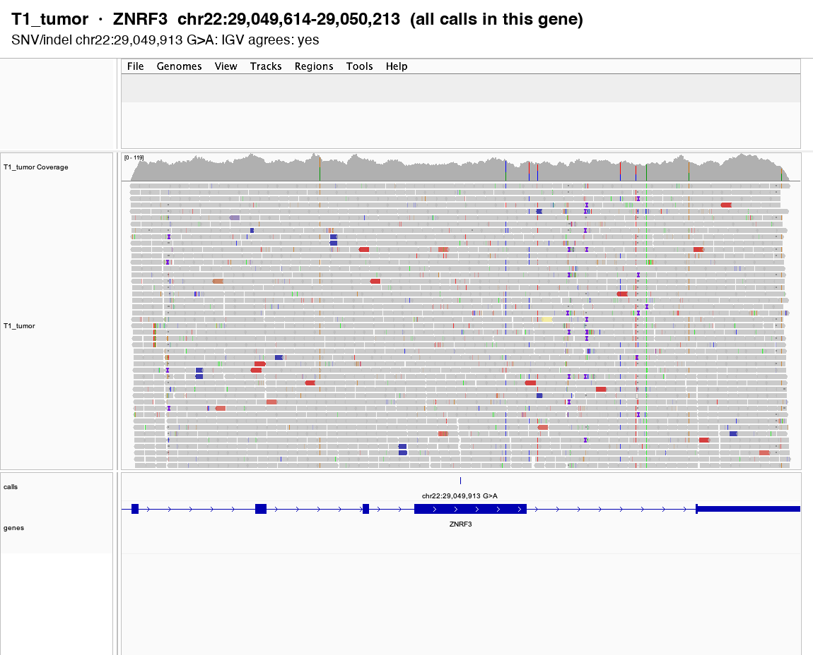 report · overview · interactive |
IGV screenshots
Depth plots
3 to look at first, 1 unclear, 0 likely inherited or artifact, 7 consistent so far out of 11 raw calls from the callers (SNVs/indels, SVs, copy-number gains/losses), before any filtering. Likely inherited or artifact: the same variant is in 3+ samples.
| Sample | Gene | Tool | The caller called | What IGV shows | Start here | Evidence |
|---|---|---|---|---|---|---|
| T2_tumor | FGFR3 | candidates.vcf | SNV/indel chr4:1,805,817 1 bp deletion | 4 of 119 reads carry the deletion (3.4%), but under 5% of reads.detailsReason: under 5% of reads Review: check first: IGV does not agree; low allele fraction Read counts: 4 of 119 reads carry the deletion (3.4%); 3 forward / 1 reverse Location: chr4:1805817 Flags: low_vaf | Look first | report · overview · interactive |
| T0_tumor | ODF1 | candidates.vcf | SNV/indel chr8:102,560,579 G>T | 5 of 52 reads carry T (9.6%), but all supporting reads on one strand (artifact pattern).detailsReason: all supporting reads on one strand (artifact pattern) Review: check first: IGV does not agree; all supporting reads on one strand Read counts: 5 of 52 reads carry T (9.6%); 0 forward / 5 reverse Location: chr8:102560579 Flags: strand_bias | Look first | report · overview · interactive |
| T1_tumor | ROS1 | candidates.vcf | SNV/indel chr6:117,301,021 G>T | 6 of 94 reads carry T (6.4%), but the normal already carries another allele here.detailsReason: the normal already carries another allele here Review: check first: IGV does not agree Read counts: 6 of 94 reads carry T (6.4%); 3 forward / 3 reverse Location: chr6:117301021 Flags: germline_site | Look first | report · overview · interactive |
| T1_tumor | ATRX | candidates.vcf | SNV/indel chrX:77,599,465 C>T | Only a few reads carry the variant.detailsReason: too few supporting reads; under 5% of reads Review: check first: few supporting reads; low allele fraction; weak read support Read counts: 2 of 66 reads carry T (3.0%); 1 forward / 1 reverse Location: chrX:77599465 Flags: low_support;low_vaf | Unclear | report · overview · interactive |
| T1_tumor | CDKN2B-PARD3B | candidates.vcf | SV chr2:205,310,103 <-> chr9:22,007,648 breakend | Reads support the rearrangement (split and discordant reads at the breakpoint).detailsReason: the reads support the call Review: low priority Read counts: 18 reads support the rearrangement (12 split, 6 discordant pairs, counted at both breakends); 84 reads cover the first breakend Location: chr2:205310103 | Consistent so far | report · overview · interactive |
| T1_tumor | DOT1L | candidates.vcf | SNV/indel chr19:2,214,506 G>A | The variant is in the reads: 12 of 62 reads carry A (19.4%).detailsReason: the reads support the call Review: low priority Read counts: 12 of 62 reads carry A (19.4%); 6 forward / 6 reverse Location: chr19:2214506 | Consistent so far | report · overview · interactive |
| T1_tumor | H1-2 | candidates.vcf | SNV/indel chr6:26,055,824 15 bp deletion | The variant is in the reads: 9 of 108 reads carry the deletion (8.3%).detailsReason: the reads support the call Review: low priority Read counts: 9 of 108 reads carry the deletion (8.3%); 5 forward / 4 reverse Location: chr6:26055824 | Consistent so far | report · overview · interactive |
| T1_tumor | MAP2 | candidates.vcf | SNV/indel chr2:209,694,772 28 bp deletion | The variant is in the reads: 29 of 85 reads carry the deletion (34.1%).detailsReason: the reads support the call Review: low priority Read counts: 29 of 85 reads carry the deletion (34.1%); 8 forward / 21 reverse Location: chr2:209694772 | Consistent so far | report · overview · interactive |
| T1_tumor | ROBO2 | candidates.vcf | SNV/indel chr3:77,607,853 C>A | The variant is in the reads: 13 of 124 reads carry A (10.5%).detailsReason: the reads support the call Review: low priority Read counts: 13 of 124 reads carry A (10.5%); 5 forward / 8 reverse Location: chr3:77607853 | Consistent so far | report · overview · interactive |
| T0_tumor | USH2A | candidates.vcf | SNV/indel chr1:215,650,752 C>A | The variant is in the reads: 15 of 40 reads carry A (37.5%).detailsReason: the reads support the call Review: low priority Read counts: 15 of 40 reads carry A (37.5%); 10 forward / 5 reverse Location: chr1:215650752 | Consistent so far | report · overview · interactive |
| T1_tumor | ZNRF3 | candidates.vcf | SNV/indel chr22:29,049,913 G>A | The variant is in the reads: 3 of 57 reads carry A (5.3%).detailsReason: the reads support the call Review: low priority Read counts: 3 of 57 reads carry A (5.3%); 1 forward / 2 reverse Location: chr22:29049913 | Consistent so far | report · overview · interactive |
ClawBio is a research and educational tool. It is not a medical device and does not provide clinical diagnoses. Consult a healthcare professional before making any medical decisions.